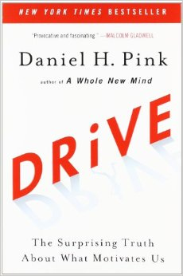

2012-2013
Первый курс
2 тренера
курс по Ruby(20)
(20)
2013-2014
2 курса по Ruby + расширили команду тренеров (25)
Первый курс по JS (30)
Первый курс по C# (25)
(80)
2014-2015
2 курса по JS (30+30)
курс по Ruby в новом составе (25)
Java слайды
(85)
2015-2016
Курс по JS (Kyiv, Kharkov, Lviv)(25+25+20)
Курс по Ruby (Kyiv, Kharkov, Lviv)(25+20+20)
Курс по C# (Kyiv, Lviv)(25+25)
Курс по Erlang (пробный) (20)
(210)
2017
Просто курс(Full-Stack) (~20)
About 400 alumni (KPI 300 in a year)
Google, Amazon, eBay, Materialize, Grummarly, RubyRiders, RailsReactor...
Contributing to NodeSchool, RailsGirls, a ton of conferences
How did we get there?
(insider)
Инжинеры - инжинерам
(люди работают с технологией)
Меняем, экспериментируем.

Drive: The Surprising Truth About What Motivates Us
Tribe: On Homecoming and Belonging